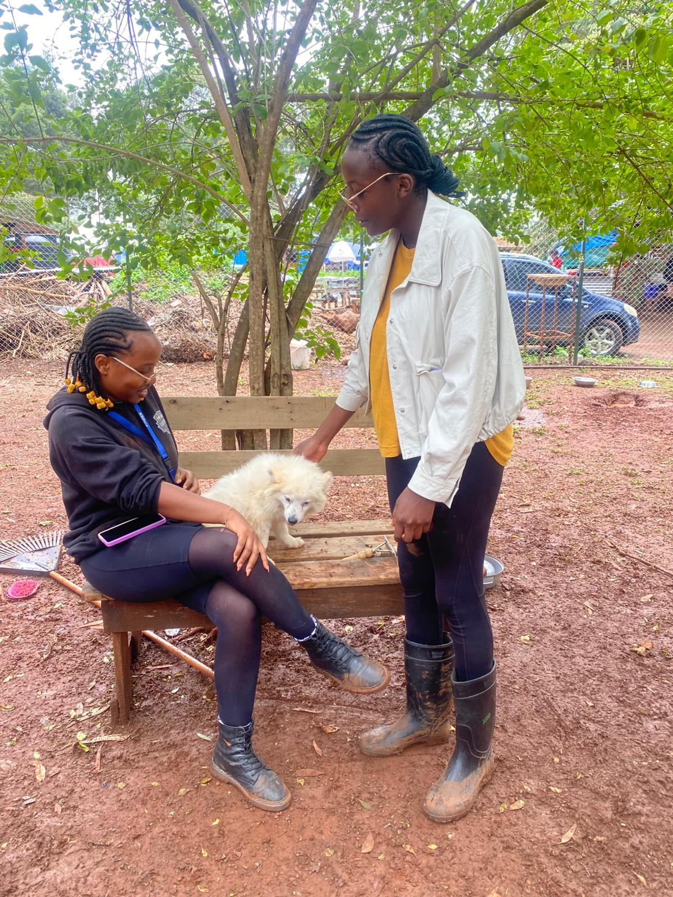
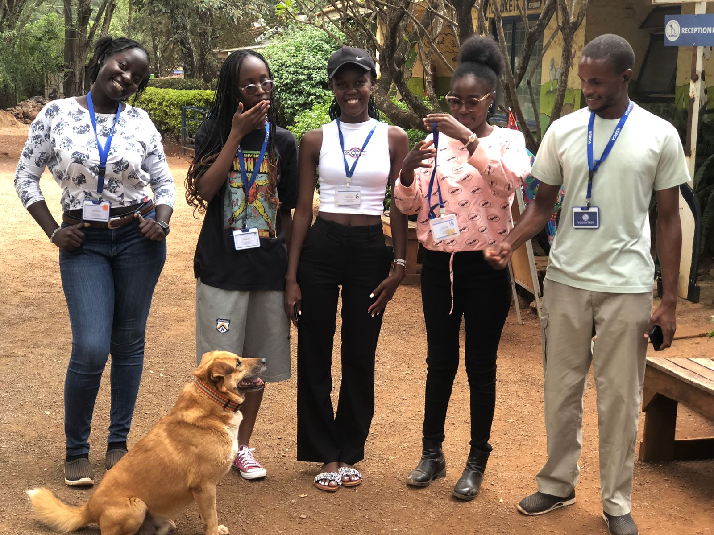

Children’s Homes
Give children something priceless: your time and attention. Join activities, play games, read stories, help with everyday tasks and bring smiles to their day.
SHARE YOUR TIMEYou don’t need to be a professional, make huge donations or dedicate your entire day to making a difference. Sometimes, showing up, lending a hand and spending time with someone is enough.
Sometimes, the hardest part of giving back is simply knowing where to begin.
Many people want to support vulnerable children, visit people in need or care for rescued animals. They want to do something meaningful with their free time.
But finding organisations that need help, knowing what activities to participate in and organising a visit can be challenging.
And then life gets busy. Days turn into weeks, and the good intentions we had keep getting postponed.
What if finding an opportunity to help was easier than you thought?
You don’t need to have everything figured out before you start making a difference. Sometimes, all it takes is a little time, a willing heart and the decision to show up.
Spend time with children, keep someone company or simply bring a little joy to someone’s day.
Help with laundry, cleaning, feeding assistance and other everyday activities where an extra pair of hands is needed.
Walk a rescued dog, spend time with shelter cats or help provide useful items to people who need them.
You may not change the whole world in one visit, but you can make a meaningful difference in someone’s world.
Finding an opportunity to give back shouldn’t be difficult. You just need the right people and a place to start.
Volunteer Gigs brings together people who want to make a difference and connects them with volunteering opportunities at children’s homes, hospices and animal shelters.
From spending time with children and supporting hospice caregivers to walking rescued dogs and helping with everyday tasks, there are different ways to contribute.
You don’t have to do it alone. Join a community of like-minded people, discover upcoming visits and be part of something meaningful.

Whether you love working with children, supporting people who need care, or spending time with animals, there’s a place where your time and kindness can matter.
Give children something priceless: your time and attention. Join activities, play games, read stories, help with everyday tasks and bring smiles to their day.
SHARE YOUR TIME
Show compassion to people facing difficult moments. Offer companionship, help with approved everyday activities and support caregivers where assistance is welcome.
SHOW COMPASSION
Help rescued animals feel loved and cared for. Spend time with dogs and cats, assist with cleaning, support feeding activities and help with socialisation.
CARE FOR ANIMALSAll volunteering activities are arranged subject to the participating organisation’s approval and guidelines. Care-related activities remain under the supervision of the appropriate staff.
You don’t need special skills or years of experience. All you need is the willingness to show up and make someone’s day a little better.
Become part of our volunteer community through WhatsApp or Telegram. Connect with people who share your desire to give back.
START HEREFind out about upcoming visits and volunteering activities at children’s homes, hospices and animal shelters.
EXPLOREChoose an activity that works for you, confirm your participation and understand the arrangements and guidelines for the visit.
MAKE A PLANCome along, lend a helping hand and share your time. Small acts of kindness can create meaningful moments.
MAKE IT COUNTVolunteer Gigs is an independent volunteer community. Activities and visits are subject to the approval, availability and guidelines of participating organisations.
Volunteering isn’t always about grand gestures. It can be a conversation, a helping hand, a shared laugh or simply showing up.



Have a volunteering moment or story to share? We’d love to celebrate the kindness happening in our community.
Some organisations may also welcome useful items or other forms of support. Check with the organisation first to confirm what is needed and how donations should be delivered.
Join the Volunteer Gigs community and connect with people who want to make a positive difference. Reach out if you have a question or would like to share an opportunity.